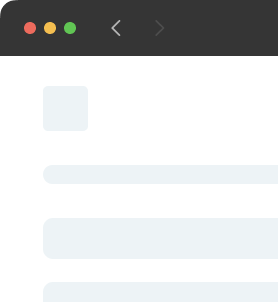

This exploration involves not only crafting visually appealing
and intuitive user interfaces but also delving into the
underlying server-side logic and database management.

Mobile
Through hands-on experience, I adeptly navigated the dynamic
landscape of mobile app creation, immersing myself in the
intricate process of bringing digital pocket innovations to
life.
Design
Being one that prioritizes user-centric excellence and deeply
appreciates captivating designs, this category showcases
projects that I have undertaken that my attempt at elevating the
art of functionality.